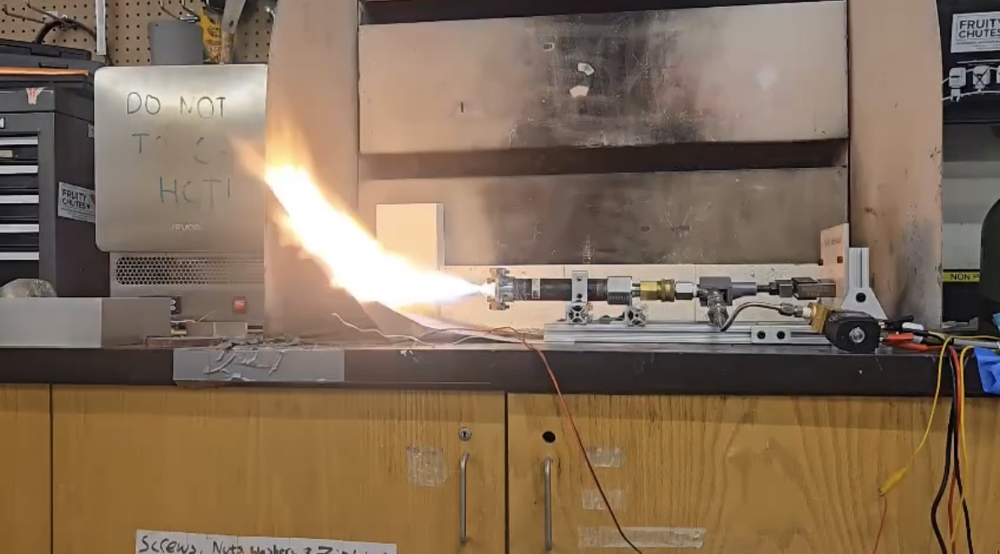

Hybrid Rocket Nozzle Design, Simulation, and Testing
I designed and modeled a nozzle for BURPG’s hybrid introduction project. My work included thrust-efficiency calculations, SOLIDWORKS modeling, and SOLIDWORKS simulation. These simulations included finite element analysis (FEA) to evaluate stress, displacement, and factor of safety under pressure, which adhered to NASA-STD-5005D requirements: minimum factors of safety of 2 against yielding and 3 against ultimate failure. The design progressed through multiple reviews and completed a successful three-second static fire with no structural damage.
